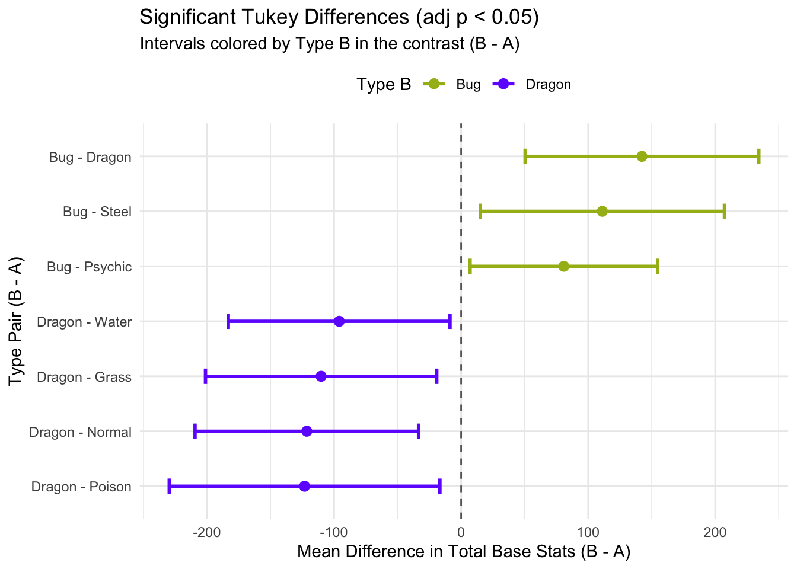
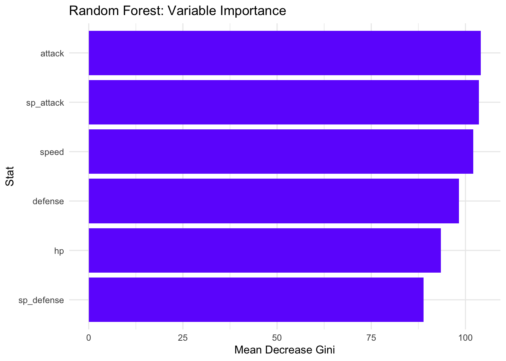

Statistical and Machine Learning Analysis
ANOVA: Do primary types differ in total base stats?
| ANOVA: Base Total ~ Primary Type | ||||||
| Effect size shown as Eta-squared for type1 | ||||||
| Term | DF | Sum Sq | Mean Sq | F Statistic | Pr(>F) | Eta-squared |
|---|---|---|---|---|---|---|
| Primary Type (type1) | 17 | 749021.6 | 44060.1 | 3.249 | <0.001 | 0.066 |
| Residuals | 783 | 10618572.5 | 13561.4 | — | — | — |

| Tukey HSD Post-hoc: Pairwise Type Differences | ||||||
| Pairs sorted by adjusted p-value; Significant = adj p < 0.05 | ||||||
| Type_A | Type_B | Mean Diff | CI Low | CI High | Adj p | Significant |
|---|---|---|---|---|---|---|
| Dragon | Bug | 142.35 | 50.35 | 234.34 | <0.001 | TRUE |
| Normal | Dragon | -121.48 | -209.44 | -33.52 | <0.001 | TRUE |
| Grass | Dragon | -110.20 | -201.22 | -19.18 | 0.003 | TRUE |
| Steel | Bug | 111.15 | 15.07 | 207.24 | 0.007 | TRUE |
| Poison | Dragon | -123.22 | -229.74 | -16.69 | 0.007 | TRUE |
| Water | Dragon | -95.99 | -183.24 | -8.74 | 0.015 | TRUE |
| Psychic | Bug | 80.83 | 7.05 | 154.61 | 0.016 | TRUE |
| Fighting | Dragon | -107.96 | -217.91 | 2.00 | 0.061 | FALSE |
| Steel | Normal | 90.29 | -1.94 | 182.52 | 0.063 | FALSE |
| Fire | Bug | 70.20 | -3.98 | 144.39 | 0.089 | FALSE |
| Ground | Dragon | -96.68 | -203.21 | 9.84 | 0.129 | FALSE |
| Psychic | Normal | 59.97 | -8.72 | 128.66 | 0.177 | FALSE |
| Rock | Bug | 66.84 | -10.63 | 144.30 | 0.193 | FALSE |
| Electric | Dragon | -86.62 | -188.68 | 15.43 | 0.217 | FALSE |
| Steel | Poison | 92.02 | -18.06 | 202.10 | 0.240 | FALSE |
| Steel | Grass | 79.01 | -16.15 | 174.16 | 0.251 | FALSE |
| Ghost | Dragon | -88.07 | -199.02 | 22.87 | 0.329 | FALSE |
| Dark | Bug | 69.33 | -20.33 | 158.98 | 0.377 | FALSE |
| Ice | Dragon | -89.17 | -204.84 | 26.50 | 0.383 | FALSE |
| Fairy | Dragon | -95.61 | -219.65 | 28.43 | 0.383 | FALSE |
| Rock | Dragon | -75.51 | -174.75 | 23.72 | 0.408 | FALSE |
| Water | Bug | 46.36 | -15.01 | 107.72 | 0.422 | FALSE |
| Fire | Dragon | -72.14 | -168.84 | 24.55 | 0.446 | FALSE |
| Normal | Fire | -49.34 | -118.46 | 19.79 | 0.532 | FALSE |
| Water | Steel | -64.79 | -156.35 | 26.76 | 0.548 | FALSE |
| Electric | Bug | 55.72 | -25.33 | 136.77 | 0.603 | FALSE |
| Steel | Fighting | 76.76 | -36.64 | 190.16 | 0.631 | FALSE |
| Psychic | Poison | 61.70 | -29.56 | 152.96 | 0.633 | FALSE |
| Psychic | Grass | 48.69 | -23.88 | 121.25 | 0.647 | FALSE |
| Dragon | Dark | 73.02 | -36.00 | 182.04 | 0.650 | FALSE |
| Psychic | Dragon | -61.51 | -157.90 | 34.87 | 0.730 | FALSE |
| Rock | Normal | 45.97 | -26.66 | 118.60 | 0.743 | FALSE |
| Steel | Ground | 65.49 | -44.59 | 175.57 | 0.826 | FALSE |
| Ghost | Bug | 54.27 | -37.72 | 146.27 | 0.835 | FALSE |
| Normal | Dark | -48.46 | -133.98 | 37.05 | 0.876 | FALSE |
| Poison | Fire | -51.07 | -142.66 | 40.52 | 0.891 | FALSE |
| Ice | Bug | 53.18 | -44.46 | 150.82 | 0.909 | FALSE |
| Ground | Bug | 45.66 | -40.95 | 132.27 | 0.930 | FALSE |
| Steel | Electric | 55.43 | -50.33 | 161.19 | 0.934 | FALSE |
| Grass | Fire | -38.06 | -111.04 | 34.92 | 0.936 | FALSE |
| Water | Psychic | -34.47 | -102.25 | 33.30 | 0.949 | FALSE |
| Steel | Fairy | 64.42 | -62.69 | 191.52 | 0.950 | FALSE |
| Rock | Poison | 47.70 | -46.56 | 141.97 | 0.951 | FALSE |
| Steel | Ghost | 56.88 | -57.48 | 171.24 | 0.958 | FALSE |
| Psychic | Fighting | 46.44 | -48.80 | 141.68 | 0.965 | FALSE |
| Steel | Ice | 57.97 | -60.98 | 176.92 | 0.965 | FALSE |
| Grass | Bug | 32.15 | -34.48 | 98.77 | 0.968 | FALSE |
| Poison | Dark | -50.20 | -154.71 | 54.32 | 0.970 | FALSE |
| Water | Normal | 25.49 | -29.64 | 80.63 | 0.979 | FALSE |
| Normal | Electric | -34.86 | -111.30 | 41.58 | 0.982 | FALSE |
| Rock | Grass | 34.69 | -41.62 | 111.00 | 0.982 | FALSE |
| Fairy | Bug | 46.74 | -60.69 | 154.16 | 0.989 | FALSE |
| Steel | Rock | 44.32 | -58.72 | 147.35 | 0.990 | FALSE |
| Grass | Dark | -37.18 | -125.84 | 51.48 | 0.993 | FALSE |
| Steel | Fire | 40.95 | -59.65 | 141.55 | 0.995 | FALSE |
| Psychic | Ground | 35.17 | -56.09 | 126.43 | 0.997 | FALSE |
| Normal | Ghost | -33.41 | -121.37 | 54.55 | 0.998 | FALSE |
| Fighting | Bug | 34.39 | -56.40 | 125.18 | 0.998 | FALSE |
| Poison | Electric | -36.59 | -133.82 | 60.64 | 0.998 | FALSE |
| Fire | Fighting | 35.81 | -59.74 | 131.37 | 0.998 | FALSE |
| Steel | Dark | 41.82 | -70.67 | 154.32 | 0.998 | FALSE |
| Water | Fire | -23.85 | -92.06 | 44.37 | >0.999 | FALSE |
| Normal | Ice | -32.31 | -126.16 | 61.54 | >0.999 | FALSE |
| Normal | Bug | 20.86 | -41.51 | 83.24 | >0.999 | FALSE |
| Water | Poison | 27.23 | -54.32 | 108.78 | >0.999 | FALSE |
| Rock | Fighting | 32.45 | -65.68 | 130.57 | >0.999 | FALSE |
| Poison | Ghost | -35.14 | -141.67 | 71.38 | >0.999 | FALSE |
| Fighting | Dark | -34.94 | -142.94 | 73.07 | >0.999 | FALSE |
| Psychic | Fairy | 34.10 | -77.11 | 145.31 | >0.999 | FALSE |
| Poison | Ice | -34.05 | -145.48 | 77.39 | >0.999 | FALSE |
| Flying | Bug | 72.90 | -167.31 | 313.11 | >0.999 | FALSE |
| Steel | Psychic | 30.32 | -69.98 | 130.62 | >0.999 | FALSE |
| Normal | Ground | -24.80 | -107.11 | 57.52 | >0.999 | FALSE |
| Grass | Electric | -23.58 | -103.52 | 56.37 | >0.999 | FALSE |
| Psychic | Electric | 25.11 | -60.89 | 111.11 | >0.999 | FALSE |
| Water | Rock | -20.48 | -92.24 | 51.29 | >0.999 | FALSE |
| Flying | Dragon | -69.44 | -317.53 | 178.64 | >0.999 | FALSE |
| Psychic | Ghost | 26.56 | -69.82 | 122.95 | >0.999 | FALSE |
| Steel | Dragon | -31.19 | -145.56 | 83.17 | >0.999 | FALSE |
| Psychic | Ice | 27.66 | -74.13 | 129.44 | >0.999 | FALSE |
| Water | Dark | -22.97 | -107.75 | 61.81 | >0.999 | FALSE |
| Ground | Fire | -24.54 | -116.13 | 67.05 | >0.999 | FALSE |
| Poison | Ground | -26.53 | -128.44 | 75.38 | >0.999 | FALSE |
| Normal | Fairy | -25.87 | -129.87 | 78.12 | >0.999 | FALSE |
| Grass | Ghost | -22.13 | -113.15 | 68.90 | >0.999 | FALSE |
| Water | Grass | 14.21 | -45.69 | 74.11 | >0.999 | FALSE |
| Poison | Fairy | -27.60 | -147.71 | 92.50 | >0.999 | FALSE |
| Ground | Dark | -23.66 | -128.18 | 80.85 | >0.999 | FALSE |
| Rock | Ground | 21.17 | -73.09 | 115.44 | >0.999 | FALSE |
| Poison | Bug | 19.13 | -67.48 | 105.74 | >0.999 | FALSE |
| Poison | Flying | -53.77 | -299.91 | 192.37 | >0.999 | FALSE |
| Normal | Flying | -52.04 | -290.73 | 186.66 | >0.999 | FALSE |
| Ice | Grass | 21.03 | -75.69 | 117.76 | >0.999 | FALSE |
| Fighting | Electric | -21.33 | -122.31 | 79.64 | >0.999 | FALSE |
| Fire | Fairy | 23.47 | -88.01 | 134.95 | >0.999 | FALSE |
| Normal | Grass | -11.28 | -72.22 | 49.65 | >0.999 | FALSE |
| Fairy | Dark | -22.59 | -144.91 | 99.73 | >0.999 | FALSE |
| Ghost | Fighting | 19.88 | -90.07 | 129.83 | >0.999 | FALSE |
| Rock | Fairy | 20.10 | -93.59 | 133.79 | >0.999 | FALSE |
| Grass | Flying | -40.76 | -280.60 | 199.08 | >0.999 | FALSE |
| Rock | Psychic | -14.00 | -96.63 | 68.64 | >0.999 | FALSE |
| Fire | Electric | 14.48 | -71.87 | 100.83 | >0.999 | FALSE |
| Ice | Fire | -17.03 | -119.11 | 85.06 | >0.999 | FALSE |
| Ghost | Fire | -15.93 | -112.63 | 80.77 | >0.999 | FALSE |
| Ice | Fighting | 18.79 | -95.93 | 133.50 | >0.999 | FALSE |
| Ground | Grass | 13.52 | -72.06 | 99.09 | >0.999 | FALSE |
| Normal | Fighting | -13.53 | -100.23 | 73.18 | >0.999 | FALSE |
| Flying | Fighting | 38.51 | -209.13 | 286.16 | >0.999 | FALSE |
| Steel | Flying | 38.25 | -211.38 | 287.88 | >0.999 | FALSE |
| Poison | Grass | -13.01 | -98.59 | 72.56 | >0.999 | FALSE |
| Poison | Fighting | -15.26 | -120.75 | 90.23 | >0.999 | FALSE |
| Ice | Dark | -16.15 | -129.97 | 97.67 | >0.999 | FALSE |
| Water | Fighting | 11.97 | -74.01 | 97.95 | >0.999 | FALSE |
| Ghost | Dark | -15.05 | -124.07 | 93.96 | >0.999 | FALSE |
| Grass | Fairy | -14.59 | -121.18 | 92.01 | >0.999 | FALSE |
| Electric | Dark | -13.60 | -113.56 | 86.35 | >0.999 | FALSE |
| Psychic | Fire | 10.63 | -68.94 | 90.20 | >0.999 | FALSE |
| Rock | Ice | 13.66 | -90.83 | 118.15 | >0.999 | FALSE |
| Rock | Ghost | 12.56 | -86.67 | 111.80 | >0.999 | FALSE |
| Rock | Electric | 11.11 | -78.07 | 100.30 | >0.999 | FALSE |
| Water | Electric | -9.36 | -84.99 | 66.26 | >0.999 | FALSE |
| Psychic | Dark | 11.51 | -82.65 | 105.66 | >0.999 | FALSE |
| Water | Flying | -26.54 | -264.98 | 211.89 | >0.999 | FALSE |
| Ground | Flying | -27.24 | -273.38 | 218.90 | >0.999 | FALSE |
| Ground | Fighting | 11.27 | -94.22 | 116.76 | >0.999 | FALSE |
| Ground | Electric | -10.06 | -107.29 | 87.17 | >0.999 | FALSE |
| Flying | Fairy | 26.17 | -228.05 | 280.38 | >0.999 | FALSE |
| Fighting | Fairy | -12.35 | -135.50 | 110.81 | >0.999 | FALSE |
| Water | Ghost | -7.91 | -95.16 | 79.33 | >0.999 | FALSE |
| Fire | Dark | 0.88 | -93.60 | 95.35 | >0.999 | FALSE |
| Flying | Dark | 3.57 | -243.65 | 250.80 | >0.999 | FALSE |
| Rock | Dark | -2.49 | -99.56 | 94.58 | >0.999 | FALSE |
| Fairy | Electric | -8.99 | -125.15 | 107.17 | >0.999 | FALSE |
| Flying | Electric | 17.18 | -227.06 | 261.42 | >0.999 | FALSE |
| Ghost | Electric | -1.45 | -103.51 | 100.61 | >0.999 | FALSE |
| Ice | Electric | -2.55 | -109.72 | 104.63 | >0.999 | FALSE |
| Ghost | Fairy | 7.54 | -116.51 | 131.58 | >0.999 | FALSE |
| Ground | Fairy | -1.07 | -121.18 | 119.03 | >0.999 | FALSE |
| Ice | Fairy | 6.44 | -121.84 | 134.73 | >0.999 | FALSE |
| Water | Fairy | -0.38 | -103.77 | 103.01 | >0.999 | FALSE |
| Grass | Fighting | -2.24 | -92.05 | 87.56 | >0.999 | FALSE |
| Flying | Fire | 2.70 | -239.35 | 244.75 | >0.999 | FALSE |
| Rock | Fire | -3.37 | -86.37 | 79.63 | >0.999 | FALSE |
| Ghost | Flying | -18.63 | -266.72 | 229.46 | >0.999 | FALSE |
| Ice | Flying | -19.72 | -269.96 | 230.51 | >0.999 | FALSE |
| Psychic | Flying | 7.93 | -233.99 | 249.86 | >0.999 | FALSE |
| Rock | Flying | -6.07 | -249.14 | 237.01 | >0.999 | FALSE |
| Ground | Ghost | -8.61 | -115.14 | 97.92 | >0.999 | FALSE |
| Ice | Ghost | -1.10 | -116.77 | 114.58 | >0.999 | FALSE |
| Ice | Ground | 7.51 | -103.92 | 118.95 | >0.999 | FALSE |
| Water | Ground | 0.70 | -80.86 | 82.25 | >0.999 | FALSE |
| Water | Ice | -6.82 | -100.00 | 86.36 | >0.999 | FALSE |
| Poison | Normal | -1.73 | -84.05 | 80.58 | >0.999 | FALSE |

Two-sample t-test: Are legendary Pokémon stronger?
| Group Means: Total Base Stats | ||
| Group | N | Mean Total |
|---|---|---|
| Non-legendary | 731 | 410.48 |
| Legendary | 70 | 615.26 |
Groups defined by is_legendary. |
||
| Two-sample t-test | |||
| Outcome: Total Base Stats; Grouping: Legendary vs Non-legendary | |||
| Mean Difference (Legendary - Non) | 95% CI Low | 95% CI High | p-value |
|---|---|---|---|
| -204.78 | -225.88 | -183.67 | <0.001 |

Logistic regression: Predicting legendary status
| Logistic Regression (Odds Ratios) | ||||
| Outcome: Legendary status; predictors include total, type, generation | ||||
| Term | Odds Ratio | CI Low | CI High | p-value |
|---|---|---|---|---|
| Intercept | 0.000 | 0.000 | 0.000000e+00 | <0.001 |
| base_total | 1.034 | 1.027 | 1.044000e+00 | <0.001 |
| Type1:Dark | 1.315 | 0.128 | 1.356400e+01 | 0.815 |
| Type1:Dragon | 0.247 | 0.027 | 2.468000e+00 | 0.221 |
| Type1:Electric | 4.644 | 0.646 | 3.873500e+01 | 0.136 |
| Type1:Fairy | 0.780 | 0.014 | 1.987700e+01 | 0.893 |
| Type1:Fighting | 0.000 | 0.000 | 2.130620e+24 | 0.992 |
| Type1:Fire | 2.358 | 0.359 | 1.760500e+01 | 0.380 |
| Type1:Flying | 7.972 | 0.156 | 4.980680e+02 | 0.293 |
| Type1:Ghost | 0.380 | 0.009 | 7.371000e+00 | 0.568 |
| Type1:Grass | 1.156 | 0.165 | 8.756000e+00 | 0.884 |
| Type1:Ground | 1.214 | 0.052 | 1.689900e+01 | 0.891 |
| Type1:Ice | 5.052 | 0.466 | 4.992700e+01 | 0.160 |
| Type1:Normal | 0.326 | 0.032 | 2.957000e+00 | 0.322 |
| Type1:Poison | 0.000 | 0.000 | 1.152391e+26 | 0.993 |
| Type1:Psychic | 13.953 | 2.289 | 1.075800e+02 | 0.007 |
| Type1:Rock | 1.319 | 0.148 | 1.188000e+01 | 0.801 |
| Type1:Steel | 3.134 | 0.371 | 3.030300e+01 | 0.303 |
| Type1:Water | 0.825 | 0.118 | 6.249000e+00 | 0.846 |
| Gen:2 | 1.551 | 0.242 | 1.020900e+01 | 0.641 |
| Gen:3 | 0.998 | 0.190 | 5.645000e+00 | 0.998 |
| Gen:4 | 3.884 | 0.856 | 2.043800e+01 | 0.089 |
| Gen:5 | 7.825 | 1.780 | 4.108900e+01 | 0.009 |
| Gen:6 | 2.287 | 0.302 | 1.761700e+01 | 0.420 |
| Gen:7 | 35.280 | 7.419 | 2.114260e+02 | <0.001 |
| ROC AUC |
| AUC |
|---|
| 0.973 |

| Calibration bins | |||
| Predicted probability vs empirical legendary rate (deciles) | |||
| bin | Mean Pred | Empirical Rate | N |
|---|---|---|---|
| [0,0.1] | 0.007411194 | 0.005997001 | 667 |
| (0.1,0.2] | 0.154777428 | 0.107142857 | 28 |
| (0.2,0.3] | 0.245944800 | 0.250000000 | 28 |
| (0.3,0.4] | 0.346089781 | 0.500000000 | 10 |
| (0.4,0.5] | 0.468980236 | 0.400000000 | 10 |
| (0.5,0.6] | 0.543899616 | 0.428571429 | 7 |
| (0.6,0.7] | 0.643784177 | 0.916666667 | 12 |
| (0.7,0.8] | 0.766753486 | 0.833333333 | 12 |
| (0.8,0.9] | 0.868499797 | 0.800000000 | 10 |
| (0.9,1] | 0.956886125 | 0.882352941 | 17 |

Random Forest: Predicting primary type from base stats
| Random Forest Performance Summary | |
| Metric | Value |
|---|---|
| Accuracy | 27.15% |
| Naive baseline (1 / #types) | 5.56% |
| Improvement (pts) | 21.60 pts |
| Variable Importance (Mean Decrease Gini) | |
| Stat | Mean Decrease Gini |
|---|---|
| attack | 104.10 |
| sp_attack | 103.54 |
| speed | 102.10 |
| defense | 98.30 |
| hp | 93.49 |
| sp_defense | 88.91 |
